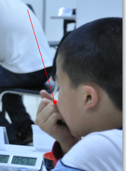
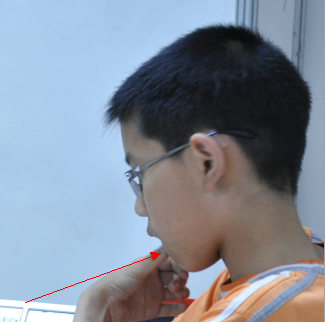

五子棋赛场上的各类“兴奋剂”
首页
五子棋新闻
#1 五子棋赛场上的各类“兴奋剂” 作者：小丸.net 发表时间：2011-6-6 18:15:17
这位一定是把早餐券丢了。。。
这个是我的

好吧，两个MM吃这么多。。。给我留点怎么样。

哥们，你是不是没有饮料了~~~

从小吃手指吃惯了吧。
看这位仁兄，带这么漂亮一杯子
这是肖斌的。。。。
茶。。。。。。。。
［此帖子已被 小丸.net 在 2011-6-6 18:18:18 编辑过］
［ 被感动的人 于 2011-6-6 18:20:40 时花20金币送鲜花一朵］
［ 被感动的人 于 2011-6-6 18:20:56 时奖励此帖[金币加 100 威望加1］
［ 蓝天蓝 于 2011-6-6 20:05:17 时花20金币送鲜花一朵］
#2 Re:五子棋赛场上的各类“兴奋剂” 作者：被感动的人 发表时间：2011-6-6 18:21:13
传这么多照片不容易啊~
#3 Re:五子棋赛场上的各类“兴奋剂” 作者：猪小姐 发表时间：2011-6-6 18:22:11
可乐。。。爪子。。。
#4 Re:五子棋赛场上的各类“兴奋剂” 作者：^版徒 发表时间：2011-6-6 19:23:36
怎么没有我喜欢的脉动
#5 Re:五子棋赛场上的各类“兴奋剂” 作者：隐藏菜系 发表时间：2011-6-6 19:43:00
看到标题，我还以为是黑丝短裙香水脚丑啥的…阿咪陀佛罪过罪过…
#6 Re:Re:五子棋赛场上的各类“兴奋剂” 作者：掌棋如烟 发表时间：2011-6-6 20:18:48
引用：
原文由 ^版徒 发表于 2011-6-6 19:23:36 :
怎么没有我喜欢的脉动
如果不是运动后的话,不要总喝脉动,那是功能性饮料,喝多会增加肾脏的负担----记得在哪看过来着,我不负责这个真实性的哦
［ ^版徒 于 2011-6-6 20:20:54 时花20金币送鲜花一朵］
#7 Re:五子棋赛场上的各类“兴奋剂” 作者：^版徒 发表时间：2011-6-6 20:20:44
如烟,你说的属实,我自己也看过,哈哈
#8 Re:五子棋赛场上的各类“兴奋剂” 作者：黄药师 发表时间：2011-6-6 21:31:49
我的最爱！！！！！！
#9 Re:五子棋赛场上的各类“兴奋剂” 作者：湮落梓涵 发表时间：2011-6-7 13:42:28
第一个是QQ糖，我的对手带来的，姐姐还给我吃了，嘿嘿